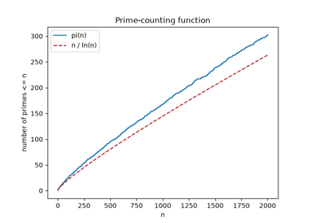

Breakthroughs in Number Theory#
“Mathematics is the queen of the sciences, and number theory is the queen of mathematics.” – attributed to Carl Friedrich Gauss (per Wolfgang Sartorius von Waltershausen’s 1856 memoir)
Number theory is the oldest continuously studied branch of mathematics
still yielding both deep theorems and, unexpectedly, some of the most
consequential applied technology of the digital age. This chronology
traces the ideas behind mathematicskit.number_theory, from Euclid’s
original algorithm to the discovery that its arithmetic underlies modern
public-key cryptography.
c. 300 BCE – Euclid’s Algorithm#
Book VII of Euclid’s Elements describes a procedure for finding the greatest common measure of two lengths by repeated subtraction – mathematically identical to the greatest common divisor algorithm still bearing his name, and a strong candidate for the oldest algorithm still in everyday use, over two thousand years after it was first written down. The extended Euclidean algorithm – tracking not just the gcd but the integer coefficients expressing it as a combination of the two inputs – is comparatively modern, but builds directly on Euclid’s original recursive structure.
Implementation: mathematicskit.number_theory.systems.modular_arithmetic.extended_gcd()
implements exactly the extended algorithm, unwinding Euclid’s own
recursion to recover Bezout’s coefficients directly;
mod_inverse()
uses it to compute modular inverses.
References: Euclid, Elements, Book VII, Propositions 1-2 (c. 300 BCE), as translated in T. L. Heath, The Thirteen Books of Euclid’s Elements, 2nd ed. (Cambridge: Cambridge University Press, 1926).

c. 250 CE – Diophantus and Indeterminate Equations#
Diophantus of Alexandria’s Arithmetica systematically studied equations to be solved in whole numbers or rationals – a class of problem now named “Diophantine” in his honor. A linear Diophantine equation \(ax+by=c\) has an integer solution precisely when \(\gcd(a,b)\) divides \(c\), a fact that follows directly from Euclid’s algorithm above; the far harder quadratic case, \(x^2 - Dy^2 = 1\), would not be fully understood for another millennium and a half.
Implementation: mathematicskit.number_theory.systems.diophantine.solve_linear_diophantine()
implements exactly the linear case, via the extended Euclidean
algorithm’s Bezout coefficients.
References: Diophantus of Alexandria, Arithmetica (c. 250 CE), as reconstructed and translated in T. L. Heath, Diophantus of Alexandria: A Study in the History of Greek Algebra, 2nd ed. (Cambridge: Cambridge University Press, 1910).

1613 – 1737 – Continued Fractions and Best Rational Approximation#
Pietro Cataldi’s 1613 treatise gave the first published continued- fraction expansion, approximating a square root by an infinite nested sequence of reciprocals; Leonhard Euler’s 1737 “De Fractionibus Continuis” gave the construction its first systematic theory, proving the property that makes continued fractions useful for far more than square roots: each successive convergent \(p_k/q_k\), built by truncating the expansion, is provably the best rational approximation to the original value among every fraction with an equal or smaller denominator.
Implementation: mathematicskit.number_theory.systems.continued_fractions.continued_fraction_expansion()
implements exactly this expansion and its convergents via the standard
recurrence \(p_k = a_k p_{k-1} + p_{k-2}\);
best_rational_approximation()
uses it to find the best rational approximation under a denominator
bound, reproducing the classical approximation \(\pi \approx
355/113\) directly. The same expansion, applied to \(\sqrt D\), is
exactly the solution method Euler and Lagrange developed for Pell’s
equation below.
References: L. Euler, “De Fractionibus Continuis Dissertatio,” Commentarii Academiae Scientiarum Petropolitanae 9 (1744), 98-137 (presented to the St. Petersburg Academy in 1737).
1657 – 1767 – Fermat, Euler, and Pell’s Equation#
Pierre de Fermat posed the equation \(x^2 - Dy^2 = 1\) as a challenge to his contemporaries in 1657, having recognized that its solutions – despite the deceptively simple quadratic form – could involve surprisingly enormous numbers for innocuous-looking values of \(D\) (the case \(D=61\) has fundamental solution \(x=1766319049\)). The equation’s now-standard name, honoring John Pell, is a historical misattribution introduced by Leonhard Euler, who conflated Pell’s unrelated editorial work with the actual solution method – continued fractions of \(\sqrt D\) (above) – that Euler himself, building on earlier work by Brahmagupta and Bhaskara II, worked out in the 18th century and Joseph-Louis Lagrange proved terminates and gives every solution in 1767-68.
Implementation: mathematicskit.number_theory.systems.diophantine.solve_pell_equation()
implements exactly this continued-fraction algorithm, reproducing the
\(D=61\) fundamental solution directly.
References: J.-L. Lagrange, “Solution d’un probleme d’arithmetique,” Miscellanea Taurinensia 4 (1766-69), 19-99.
1801 – Gauss’s Disquisitiones Arithmeticae#
Carl Friedrich Gauss’s Disquisitiones Arithmeticae, published when he was 24, systematized congruence arithmetic (“clock arithmetic,” modular reduction) as the central organizing language of number theory, and gave it the notation (\(a \equiv b \pmod m\)) still used unchanged today. Among its results is the first complete proof of the Chinese Remainder Theorem’s general case – combining several congruences with pairwise coprime moduli into a single equivalent one – whose oldest special case appears in the 3rd-5th century Chinese text Sunzi Suanjing, from which the theorem takes its name.
Implementation: mathematicskit.number_theory.systems.crt.chinese_remainder_theorem()
implements exactly this combination, and
fast_mod_pow()
implements the fast modular exponentiation that makes large-modulus
congruence arithmetic practical.
References: C. F. Gauss, Disquisitiones Arithmeticae (Leipzig: Fleischer, 1801), Sections 1-2 and 32-36 (Chinese Remainder Theorem).

1760 – Euler’s Totient Function#
Leonhard Euler introduced, in work on generalizing Fermat’s Little Theorem, the function \(\varphi(n)\) counting the integers up to \(n\) coprime to it – now called Euler’s totient function. Euler’s theorem, \(a^{\varphi(n)} \equiv 1 \pmod n\) for \(\gcd(a,n)=1\), generalizes Fermat’s Little Theorem (the special case \(n\) prime, where \(\varphi(n)=n-1\)) and is, two centuries later, the exact mathematical fact RSA public-key cryptography depends on to guarantee that decryption correctly inverts encryption.
Implementation: mathematicskit.number_theory.systems.totient.euler_totient()
implements exactly this function via prime factorization, alongside the
related Mobius function
(mobius()) and divisor-sum
function (divisor_sum()).
References: L. Euler, “Theoremata arithmetica nova methodo demonstrata,” Novi Commentarii Academiae Scientiarum Petropolitanae 8 (1763), 74-104 (presented to the St. Petersburg Academy in 1760).

1976 – 1980 – Miller, Rabin, and Primality Testing#
Gary Miller’s 1976 paper gave a deterministic primality test, but one whose correctness depended on an unproven number-theoretic conjecture (the generalized Riemann hypothesis); Michael Rabin’s 1980 paper turned Miller’s test into an unconditionally correct probabilistic one by choosing the test witness randomly, at the cost of an exponentially small (and freely adjustable) chance of error – fast enough, unlike trial division, to certify primality for numbers hundreds of digits long, exactly the size RSA key generation requires.
Implementation: mathematicskit.number_theory.systems.primality.is_prime_miller_rabin()
implements exactly this randomized test, cross-checked against the
much slower but always-certain
is_prime_trial_division()
over a wide range in the test suite;
sieve_of_eratosthenes()
implements the much older (c. 250 BCE) sieve of Eratosthenes for
generating every prime up to a limit at once.
References: G. L. Miller, “Riemann’s Hypothesis and Tests for Primality,” Journal of Computer and System Sciences 13(3) (1976), 300-317; M. O. Rabin, “Probabilistic Algorithm for Testing Primality,” Journal of Number Theory 12(1) (1980), 128-138.

The prime-counting function and the prime number theorem
1977 – 1978 – RSA and Public-Key Cryptography#
Ronald Rivest, Adi Shamir, and Leonard Adleman’s 1978 paper turned Euler’s 1760 totient theorem into a working cryptographic system: choose two large primes, publish their product and an exponent, and the sheer computational difficulty of factoring that product back into its two primes (as far as anyone has publicly shown) protects a message encrypted with the public exponent from being decrypted by anyone but the holder of the corresponding private exponent – built from the same totient function and modular-inverse machinery Euler and Gauss had developed two centuries earlier for entirely different reasons. Clifford Cocks, working at Britain’s GCHQ, had derived an equivalent scheme in 1973, but it remained classified until 1997.
Implementation: mathematicskit’s toy demonstration composes
mathematicskit.number_theory.systems.totient.euler_totient(),
mod_inverse(),
and fast_mod_pow()
directly, exactly reproducing an RSA key-generation, encryption, and
decryption round trip (with small, illustrative rather than
cryptographically secure primes).
References: R. L. Rivest, A. Shamir, and L. Adleman, “A Method for Obtaining Digital Signatures and Public-Key Cryptosystems,” Communications of the ACM 21(2) (1978), 120-126.